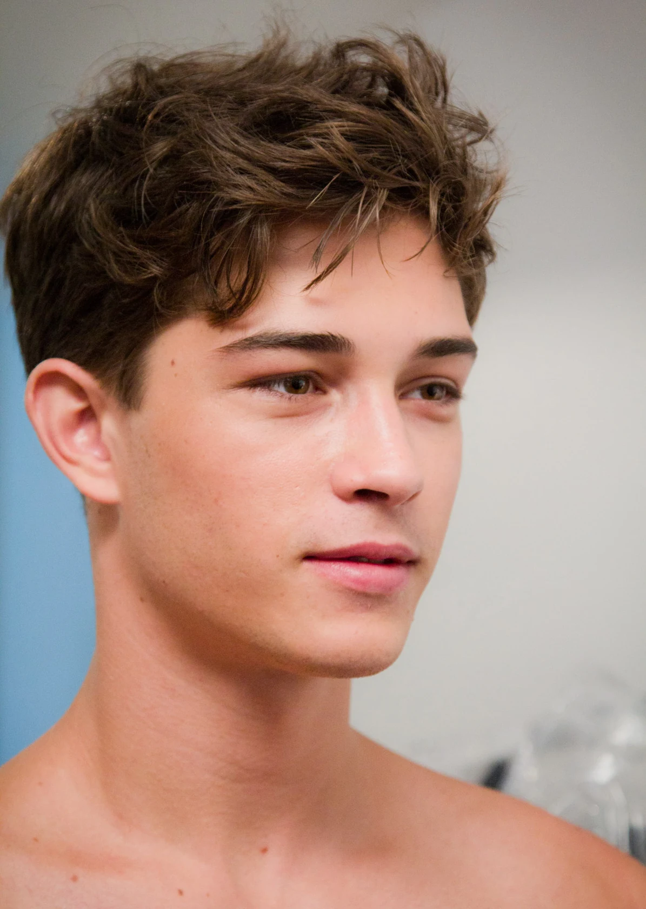

Перед выходом
Франсиско Лачовски за кулисами, Джордан Барретт на подиуме. Семь архивных кадров мужской моды.

Фотопоказ

Кадр не загрузился.
Милан, 16 января 2011
Франсиско
Лачовски
Кадр 1 из 7
Крупный портрет Лачовски за кулисами мужского показа Ermanno Scervino.
Фото Сары Чимино
Кадры
Выберите снимок, чтобы открыть его в показе.
О съёмке
Сара Чимино сняла миланское закулисье показа Ermanno Scervino 16 января 2011 года. Подиумные кадры показывают John Varvatos, DAKS и финальный выход Джордана Барретта у Justin Cassin в Берлине.